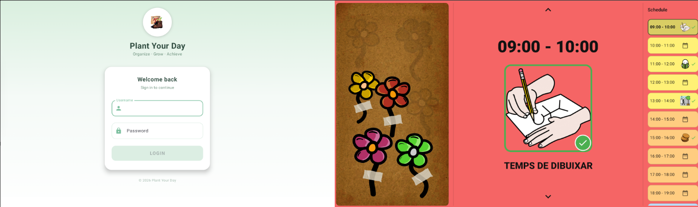
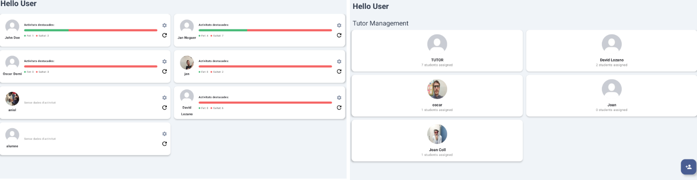

Plant Your Day
Fent les rutines mes facils
Una agenda visual i interactiva per a persones amb TEA que ajuda a estructurar el dia a dia de manera clara i motivadora.


Que ofereix Plant Your Day?
Eines dissenyades per millorar l'autonomia i les rutines diaries
Agenda Visual
Pictogrames d'ARASAAC per representar cada tasca de forma clara i accessible.
Gamificacio
Un jardi virtual que creix a mesura que l'usuari completa les seves activitats.
Privacitat
Compliment rigoros de l'RGPD. Les teves dades mai seran comercialitzades.

Green IT
Codi optimitzat i economia circular per minimitzar l'impacte mediambiental.
Que es Plant Your Day?
Tecnologia al servei de la inclusio
Plant Your Day es una aplicacio dissenyada per ajudar a les persones amb Trastorn de l'Espectre Autista (TEA) a organitzar les seves rutines diaries. La nostra plataforma ofereix una manera intuitiva i visual d'estructurar el dia a dia.
Desenvolupada per estudiants del Cicle Formatiu de Grau Superior, Plant Your Day neix del desig d'utilitzar la tecnologia per millorar la qualitat de vida de les persones amb TEA.
Agenda visual amb pictogrames
Gamificacio com a reforc positiu
Seguiment i personalitzacio
Dades protegides amb RGPD
Prova Plant Your Day ara
Descarrega la versio prototip de la nostra aplicacio i descobreix com Plant Your Day pot ajudar a millorar les rutines diaries.